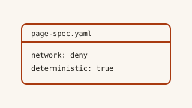
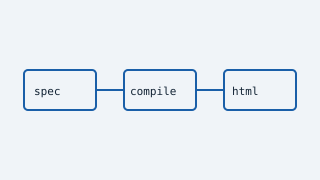
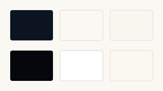
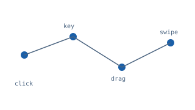

Component coverage
All components
Every block in the v1 roster appears on this page, and the artifact opens from disk with no network requests.
Layout
Stack holds children with a controlled gap
Text at lead size introduces a section.
Text at body size carries the detail underneath.
Text at caption size carries a note.
Grid child one
Grid children collapse to one column on narrow viewports.
Grid child two
The column count is an author choice, not authored CSS.
Grid child three
Each child is an ordinary block.
Wide side
Split places child groups side by side and stacks them when narrow.
Narrow side
The ratio is a named value, never a number.
End of layout
Content
Rich text renders several paragraphs from line breaks.
The compiler splits on blank lines and escapes every paragraph.
A closed action vocabulary can be validated, tested, and reviewed.
Design note
- type: text
text: Declarative input only
Block facts
- Input
- JSON or YAML
- Output
- One standalone document
- Network
- Denied unless the spec opts in
Inline primitives
- Badge renders a status chipinline
- Kbd renders key capsinline
- Divider separates groups
Network is denied on this page
Remote media degrades to a poster and a link, which is why the video and audio blocks below are not players.
Information
Roster
- Blocks
- 45
- Actions
- 12
- Presets
- 6
Roster coverage
45 of 45
Compile pipeline
Parse
JSON or YAML becomes a nested spec.
Normalize
The spec becomes a flat IR with stable node ids.
Render
Blocks emit semantic HTML.
Verify
The build fails rather than shipping an unsafe document.
How the compiler got here
Page classes first
The corpus fixed what each page class needs.
Presets as typed data
A preset is data with kinds, not a stylesheet.
Hosted path stayed opt-in
The local compiler never needs an account.
Collections
Action vocabulary
| Action | Purpose |
|---|---|
| copy | Copy text to the clipboard |
| open-url | Open an allowlisted URL |
| toggle | Toggle a dialog or the theme |
| filter | Filter a bound collection |
Local and cloud
Local compiler
- No account and no network
- Byte-identical output
- The canonical path
Cloud renderer
- Opt-in and non-authoritative
- Render and share are separate scopes
- Never persists the bearer
Guarantees
Offline
The artifact opens from disk with zero requests.
Deterministic
Identical input yields identical bytes.
Escaped
Every value is escaped for its context at emission.
Typed
Unknown blocks and props are rejected, not ignored.
Risks this page exercises
| Area | Impact | Likelihood | Note |
|---|---|---|---|
| Arbitrary markup | high | low | Rejected during validation. |
| Remote fetch | medium | low | Denied unless the spec opts in. |
| Author script | high | low | No expression language exists. |
Interactive
Modes
Details
Why native controls first?
The platform already implements keyboard and assistive behavior correctly.
Why is the action list closed?
A closed vocabulary can be validated, tested, and reviewed.
Filterable blocks
- badge
- kbd
- divider
- spacer
Data
Blocks: Layout 7, Content 8, Information 5, Collections 5, Interactive 10, Data 3, Media 5
Chart data table
| Series | Layout | Content | Information | Collections | Interactive | Data | Media |
|---|---|---|---|---|---|---|---|
| Blocks | 7 | 8 | 5 | 5 | 10 | 3 | 5 |
Milliseconds: One 4.43, Two 3.86, Three 3.6, Four 2.77
Chart data table
| Series | One | Two | Three | Four |
|---|---|---|---|---|
| Milliseconds | 4.43 | 3.86 | 3.6 | 2.77 |
Bytes: A 24839, B 26481, C 27217, D 27687
Chart data table
| Series | A | B | C | D |
|---|---|---|---|---|
| Bytes | 24839 | 26481 | 27217 | 27687 |
Blocks: Primitives 26, Semantic 19
Chart data table
| Series | Primitives | Semantic |
|---|---|---|
| Blocks | 26 | 19 |
Blocks: Primitive 26, Semantic 19
Chart data table
| Series | Primitive | Semantic |
|---|---|---|
| Blocks | 26 | 19 |
Bytes: A 22709, B 24839, C 26481, D 27217, E 27687
Chart data table
| Series | A | B | C | D | E |
|---|---|---|---|---|---|
| Bytes | 22709 | 24839 | 26481 | 27217 | 27687 |
Blocks: Covered 45
Chart data table
| Series | Covered |
|---|---|
| Blocks | 45 |
Media

Local assets

Pipeline 
Presets 
Interactions
Compiler walkthrough
A walkthrough of the compiler pipeline and the emitted artifact.
Remote media is not embedded because the page denies network access.
Open the recordingIntroduction
A short spoken introduction to the declarative page model.
Remote media is not embedded because the page denies network access.
Open the recordingCompiler pipeline
Compiler pipeline
specPage SpecirNormalized IRhtmlStandalone HTML
spec → irvalidateir → htmlrender
Rendered as a structured fallback because no diagram adapter is configured.
Review
Changed files
| Path | Status | Additions | Deletions |
|---|---|---|---|
src/render/document.ts | modified | 12 | 3 |
src/theme/tokens.ts | added | 48 | 0 |
src/spec/legacy.ts | deleted | 0 | 96 |
Findings
good
Native controls first
The platform implements keyboard behavior correctly, so no widget code is needed.
concern
Provider references stay inert
A provider reference must remain a poster and a link rather than becoming a frame.
question
Who reviews a preset change?
A preset is typed data, so a review is a diff of values.
Component coverage ends here